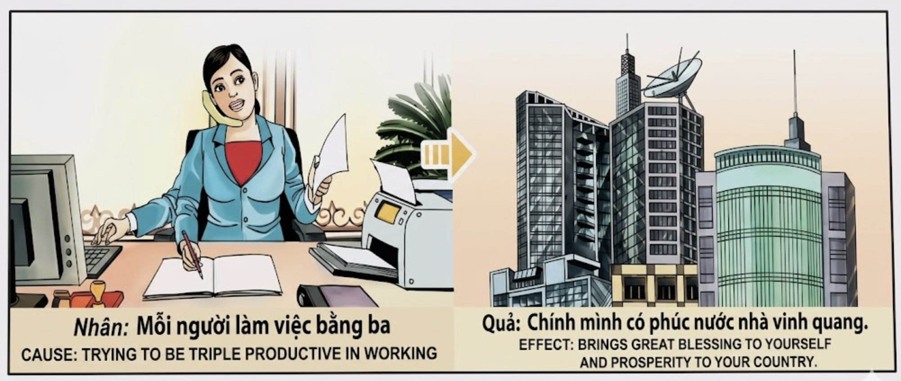

El Obrero del DestinoThe Laborer of DestinyL'Operaio del Destino命运的工匠عامل القدرТруженик судьбыDer Arbeiter des SchicksalsL'Ouvrier du Destin運命の職人O Obreiro do DestinoNgười Thợ Của Số Phận
Quien trabaja con la fuerza de tres — no por codicia, sino por nobleza de propósito — teje con sus manos el manto de la prosperidad que cubrirá no solo su hogar, sino a toda su nación. He who works with the strength of three—not out of greed, but nobility of purpose—weaves with his hands the mantle of prosperity that will cover not only his home, but his entire nation. Chi lavora con la forza di tre — non per avidità, ma per nobiltà di scopo — tesse con le sue mani il mantello della prosperità che coprirà non solo la sua casa, ma l'intera nazione. 以三倍之力工作的人——不是出于贪婪，而是出于高尚的目标——用双手编织出不仅覆盖自己家庭、更覆盖整个国家的繁荣之毯。 من يعمل بقوة ثلاثة — لا طمعاً بل نبلاً في الغاية — ينسج بيديه عباءة الازدهار التي لن تغطي بيته فحسب بل وطنه بأسره. Кто трудится с силой троих — не из жадности, а из благородства цели — ткёт своими руками мантию процветания, которая укроет не только его дом, но всю его страну. Wer mit der Kraft von dreien arbeitet — nicht aus Gier, sondern aus Edelmut des Zwecks — webt mit seinen Händen den Mantel des Wohlstands, der nicht nur sein Heim, sondern seine gesamte Nation bedecken wird. Celui qui travaille avec la force de trois — non par cupidité, mais par noblesse de dessein — tisse de ses mains le manteau de la prospérité qui couvrira non seulement son foyer, mais sa nation tout entière. 三人分の力で働く者——貪欲からではなく、目的の崇高さゆえに——その両手で織り上げるのは、自分の家だけでなく国全体を包む繁栄の外衣です。 Quem trabalha com a força de três — não por ganância, mas por nobreza de propósito — tece com as suas mãos o manto da prosperidade que cobrirá não só o seu lar, mas toda a sua nação. Kẻ làm việc bằng sức lực của ba người — không vì tham lam, mà vì sự cao quý trong mục đích — đang dệt bằng đôi tay mình tấm áo choàng thịnh vượng sẽ phủ không chỉ ngôi nhà mình, mà cả đất nước mình.
Hay un tipo de esfuerzo que trasciende la mera ambición personal. Es el trabajo del que da todo de sí no para acumular, sino para construir; no para brillar solo, sino para que el suelo que pisan todos los demás sea más firme. El karma reconoce este esfuerzo como la más alta forma de ofrenda humana. Cuando un individuo trabaja con la productividad de tres — atendiendo al teléfono mientras redacta un documento, preparando el siguiente proyecto antes de terminar el actual, dedicando sus horas con la precisión de un relojero y la pasión de un artista — no está simplemente ganándose la vida. Está sembrando en el campo invisible del karma semillas que germinarán en prosperidad colectiva.
La ley kármica del esfuerzo multiplicado funciona como un sistema de vasos comunicantes: la energía que un individuo invierte en su labor con entrega sincera no se queda atrapada en su cuenta personal, sino que se derrama hacia su familia, su comunidad y, en última instancia, hacia su nación entera. Las civilizaciones más prósperas de la historia no fueron construidas por genios solitarios, sino por pueblos donde cada ciudadano trabajaba como si el destino de todos dependiera de sus manos — porque efectivamente así era, y así es. El karma devuelve al trabajador incansable lo que le corresponde: bendición personal, paz interior, reconocimiento legítimo y, lo más importante, la certeza profunda de haber sido un ladrillo irremplazable en la catedral del bien común.
There is a kind of effort that transcends mere personal ambition. It is the work of one who gives everything not to accumulate, but to build; not to shine alone, but so that the ground beneath everyone else's feet is firmer. Karma recognizes this effort as the highest form of human offering. When an individual works with the productivity of three—answering the phone while drafting a document, preparing the next project before finishing the current one, devoting their hours with the precision of a watchmaker and the passion of an artist—they are not simply earning a living. They are sowing in karma's invisible field seeds that will germinate into collective prosperity.
The karmic law of multiplied effort works like a system of communicating vessels: the energy an individual invests in their work with sincere dedication does not remain trapped in their personal account, but overflows toward their family, their community, and ultimately their entire nation. The most prosperous civilizations in history were not built by solitary geniuses, but by peoples where every citizen worked as if the destiny of all depended on their hands—because it did, and it does. Karma returns to the tireless worker what is due: personal blessing, inner peace, legitimate recognition, and most importantly, the deep certainty of having been an irreplaceable brick in the cathedral of the common good.
Esiste un tipo di sforzo che trascende la mera ambizione personale. È il lavoro di chi dà tutto di sé non per accumulare, ma per costruire; non per brillare da solo, ma perché il terreno sotto i piedi di tutti gli altri sia più solido. Il karma riconosce questo sforzo come la più alta forma di offerta umana. Quando un individuo lavora con la produttività di tre, sta seminando nel campo invisibile del karma semi che germoglieranno in prosperità collettiva.
La legge karmica dello sforzo moltiplicato funziona come un sistema di vasi comunicanti: l'energia investita con dedizione sincera nel proprio lavoro non resta intrappolata nel conto personale, ma si riversa verso la famiglia, la comunità e l'intera nazione. Le civiltà più prospere della storia non furono costruite da geni solitari, ma da popoli dove ogni cittadino lavorava come se il destino di tutti dipendesse dalle sue mani. Il karma restituisce al lavoratore instancabile ciò che gli spetta: benedizione personale, pace interiore e la certezza profonda di essere stato un mattone insostituibile nella cattedrale del bene comune.
有一种努力超越了纯粹的个人野心。它是竭尽全力的工作——不为积累，而为建设；不为独自闪耀，而为让所有人脚下的土地更加坚实。业力将这种努力视为人类最高形式的奉献。当一个人以三倍的生产力工作——一边接电话一边起草文件，在完成当前项目之前就准备下一个项目——她不仅仅是在谋生，而是在业力那看不见的田地里播种将萌发为集体繁荣的种子。
倍增努力的业力法则犹如连通器系统：一个人以真诚奉献投入到工作中的能量不会困在个人账户里，而是溢向家庭、社区，最终溢向整个国家。历史上最繁荣的文明不是由孤独的天才建造的，而是由每一个公民都像命运系于己手一样工作的民族建造的——因为事实确实如此。业力会回报不知疲倦的劳动者应得之物：个人的祝福、内心的安宁、正当的认可，以及最重要的——深深确信自己是公共福祉大教堂中不可替代的一块砖。
ثمة نوع من الجهد يتجاوز الطموح الشخصي المحض. إنه عمل من يبذل كل ما لديه لا ليكنز بل ليبني، لا ليتألق وحده بل ليكون الأرض تحت أقدام الآخرين أمتن. يعترف الكارما بهذا الجهد بوصفه أسمى أشكال العطاء البشري. حين يعمل فرد بإنتاجية ثلاثة أشخاص، فهو يبذر في حقل الكارما الخفي بذوراً ستنبت ازدهاراً جماعياً.
قانون الكارما للجهد المضاعف يعمل كنظام أوانٍ متصلة: الطاقة التي يستثمرها الفرد بإخلاص في عمله لا تبقى حبيسة حسابه الشخصي، بل تفيض نحو أسرته ومجتمعه ووطنه بأسره. أعظم الحضارات ازدهاراً لم يبنها عباقرة منفردون بل شعوب عمل فيها كل مواطن وكأن مصير الجميع بين يديه. يرد الكارما للعامل الدؤوب ما يستحق: البركة الشخصية والسكينة الداخلية واليقين العميق بأنه كان لبنة لا تُعوَّض في صرح الخير العام.
Существует труд, который выходит за рамки простого личного честолюбия. Это работа того, кто отдаёт всего себя не ради накопления, а ради созидания; не чтобы блистать в одиночку, а чтобы почва под ногами каждого стала крепче. Карма признаёт такой труд высшей формой человеческого подношения. Когда человек работает с продуктивностью троих, он засевает невидимое поле кармы семенами, которые прорастут коллективным процветанием.
Кармический закон умноженного усилия действует как система сообщающихся сосудов: энергия, с искренней самоотдачей вложенная в труд, не остаётся запертой в личном счёте, а переливается к семье, обществу и всей стране. Самые процветающие цивилизации строились не одинокими гениями, а народами, где каждый трудился так, словно судьба всех зависит от его рук — потому что так оно и было, и так оно есть.
Es gibt eine Art von Anstrengung, die über bloßen persönlichen Ehrgeiz hinausgeht. Es ist die Arbeit desjenigen, der alles gibt, nicht um anzuhäufen, sondern um aufzubauen; nicht um allein zu glänzen, sondern damit der Boden unter den Füßen aller anderen fester wird. Karma erkennt diese Anstrengung als die höchste Form menschlicher Hingabe an. Wenn ein Mensch mit der Produktivität von dreien arbeitet, sät er auf dem unsichtbaren Feld des Karmas Samen, die zu kollektivem Wohlstand erblühen werden.
Das karmische Gesetz der vervielfachten Anstrengung wirkt wie ein System kommunizierender Gefäße: Die Energie, die jemand mit aufrichtiger Hingabe in seine Arbeit investiert, bleibt nicht in seinem persönlichen Konto eingesperrt, sondern fließt über — zur Familie, zur Gemeinschaft, zur gesamten Nation. Karma gibt dem unermüdlichen Arbeiter zurück, was ihm zusteht: persönlichen Segen, inneren Frieden und die tiefe Gewissheit, ein unersetzlicher Baustein in der Kathedrale des Gemeinwohls gewesen zu sein.
Il existe un effort qui transcende la simple ambition personnelle. C'est le travail de celui qui donne tout, non pour accumuler, mais pour construire ; non pour briller seul, mais pour que le sol sous les pieds de tous soit plus ferme. Le karma reconnaît cet effort comme la plus haute forme d'offrande humaine. Quand un individu travaille avec la productivité de trois, il sème dans le champ invisible du karma des graines qui germeront en prospérité collective.
La loi karmique de l'effort multiplié fonctionne comme un système de vases communicants : l'énergie investie avec dévouement sincère dans son travail ne reste pas piégée dans son compte personnel, mais déborde vers la famille, la communauté et la nation tout entière. Le karma rend au travailleur infatigable ce qui lui revient : bénédiction personnelle, paix intérieure et la certitude d'avoir été une brique irremplaçable dans la cathédrale du bien commun.
単なる個人的野心を超越する努力があります。それは、蓄積するためではなく、建設するために全てを捧げる者の労働です。一人で輝くためではなく、皆の足元の地面をより堅固にするために。カルマはこの努力を人間の奉納の最高の形と認めます。三人分の生産性で働く者は、カルマの見えない畑に集団的繁栄へと芽吹く種を蒔いているのです。
増幅された努力のカルマの法則は連通管のシステムのように機能します。真摯な献身で仕事に注がれたエネルギーは個人の口座に閉じ込められず、家族、社会、そして国全体へと溢れ出します。歴史上最も繁栄した文明は孤独な天才によって築かれたのではなく、すべての市民が全員の運命が自分の手にかかっているかのように働いた民族によって築かれました。カルマは不屈の労働者に報います——個人的な祝福、内なる平和、そして公共善の大聖堂のかけがえのない一つの煉瓦であったという深い確信を。
Há um tipo de esforço que transcende a mera ambição pessoal. É o trabalho de quem dá tudo de si não para acumular, mas para construir; não para brilhar sozinho, mas para que o chão sob os pés de todos seja mais firme. O karma reconhece este esforço como a mais elevada forma de oferenda humana. Quando um indivíduo trabalha com a produtividade de três, está a semear no campo invisível do karma sementes que germinarão em prosperidade coletiva.
A lei kármica do esforço multiplicado funciona como um sistema de vasos comunicantes: a energia investida com dedicação sincera no trabalho não fica presa na conta pessoal, mas transborda para a família, a comunidade e toda a nação. O karma devolve ao trabalhador incansável o que lhe é devido: bênção pessoal, paz interior e a certeza de ter sido um tijolo insubstituível na catedral do bem comum.
Có một loại nỗ lực vượt xa tham vọng cá nhân thuần túy. Ấy là sức lao động của người cống hiến hết mình không phải để tích lũy, mà để kiến thiết; không phải để tỏa sáng một mình, mà để nền đất dưới chân mọi người đều vững chắc hơn. Nhân quả công nhận nỗ lực này là hình thức cúng dường cao quý nhất của con người. Khi một người làm việc với năng suất gấp ba, họ đang gieo trên cánh đồng vô hình của nhân quả những hạt giống sẽ nảy mầm thành sự thịnh vượng chung.
Luật nhân quả của nỗ lực nhân ba vận hành như hệ thống bình thông nhau: năng lượng được đầu tư bằng sự tận tụy chân thành vào công việc không nằm yên trong tài khoản cá nhân, mà tuôn chảy đến gia đình, cộng đồng và cả đất nước. Nhân quả trả lại cho người lao động không mệt mỏi những gì xứng đáng: phước lành cá nhân, bình an nội tâm, và sự chắc chắn sâu sắc rằng mình đã là viên gạch không thể thay thế trong ngôi đại thánh đường của lợi ích chung.
Los Tres Granos de la Funcionaria
The Three Seeds of the Civil Servant
I Tre Semi della Funzionaria
女公务员的三粒种子
بذور الموظفة الثلاث
Три зерна чиновницы
Die drei Samenkörner der Beamtin
Les Trois Graines de la Fonctionnaire
女性公務員の三つの種
As Três Sementes da Funcionária
Ba Hạt Giống Của Nữ Công Chức
Un maestro le preguntó una vez a sus discípulos: "¿Qué diferencia hay entre un campo con un solo labrador y un campo con un labrador que trabaja como si fueran tres?" Los discípulos ofrecieron respuestas ingeniosas: "El triple de cosecha", dijo uno. "El triple de cansancio", bromeó otro. El maestro negó con la cabeza y contó esta historia:
Había en una pequeña oficina municipal de Vietnam una funcionaria llamada Lan. Mientras sus tres compañeros dedicaban horas a la charla y al café, Lan respondía el teléfono con una mano, redactaba documentos con la otra, y con el oído libre escuchaba los problemas de los vecinos que entraban por la puerta. Un día, los tres compañeros se quejaron al director: "Señor, Lan nos hace quedar mal — trabaja demasiado." El director, un hombre sabio, fue a observarla sin que ella lo supiera. La vio atender a una anciana que necesitaba un certificado urgente mientras al mismo tiempo imprimía los permisos de una escuela rural y al teléfono resolvía una disputa entre dos familias del mercado. Ninguna tarea quedó sin acabar. Ninguna persona se fue sin sonreír.
El director le preguntó después: "Lan, ¿por qué trabajas como si fueras tres personas?" Ella le respondió con sencillez: "Señor, un día mi abuela me dio tres granos de arroz y me dijo: 'El primero es para ti, para que no pases hambre. El segundo es para tu vecino, para que no sufra. Y el tercero es para la tierra que te sostiene, para que siga dando fruto.' Desde aquel día, cada tarea que completo es un grano de arroz: el primero es mi deber, el segundo es mi servicio al prójimo, y el tercero es mi ofrenda al país que me dio la vida." El director guardó silencio, conmovido, y entonces comprendió por qué aquella pequeña oficina era la más eficiente de toda la provincia, y por qué la provincia era la más próspera del país: porque tenía a alguien que sembraba tres granos donde otros apenas sembraban uno. Años después, aquella provincia se convirtió en una ciudad reluciente de rascacielos y antenas parabólicas, y nadie recordaba ya la oficina pequeña — pero todos vivían bajo la sombra del árbol que Lan había plantado con su esfuerzo triple, sin saberlo, grano a grano, día tras día.
A teacher once asked his disciples: "What is the difference between a field with one laborer and a field with a laborer who works as if he were three?" The disciples offered clever answers: "Triple the harvest," said one. "Triple the exhaustion," another joked. The teacher shook his head and told this story:
In a small municipal office in Vietnam there was a civil servant named Lan. While her three colleagues spent hours in chat and coffee, Lan answered the phone with one hand, drafted documents with the other, and with her free ear listened to the problems of the neighbors who walked through the door. One day, the three colleagues complained to the director: "Sir, Lan makes us look bad—she works too much." The director, a wise man, went to observe her without her knowing. He saw her attend to an elderly woman who needed an urgent certificate while simultaneously printing permits for a rural school and resolving a dispute between two market families on the phone. No task was left unfinished. No person left without a smile.
The director asked her afterward: "Lan, why do you work as if you were three people?" She answered simply: "Sir, one day my grandmother gave me three grains of rice and told me: 'The first is for you, so you don't go hungry. The second is for your neighbor, so they don't suffer. And the third is for the land that holds you up, so it may keep bearing fruit.' Since that day, every task I complete is a grain of rice: the first is my duty, the second is my service to my neighbor, and the third is my offering to the country that gave me life." The director fell silent, moved, and then understood why that small office was the most efficient in the entire province, and why the province was the most prosperous in the country: because it had someone who sowed three grains where others barely sowed one. Years later, that province became a gleaming city of skyscrapers and satellite dishes, and no one remembered the little office anymore—but everyone lived under the shade of the tree that Lan had planted with her triple effort, unknowingly, grain by grain, day after day.
Un maestro chiese un giorno ai suoi discepoli: "Che differenza c'è tra un campo con un solo contadino e un campo con un contadino che lavora come se fossero tre?" I discepoli offrirono risposte ingegnose. Il maestro scosse la testa e raccontò questa storia:
In un piccolo ufficio municipale in Vietnam c'era una funzionaria di nome Lan. Mentre i tre colleghi trascorrevano ore a chiacchierare, Lan rispondeva al telefono con una mano, redigeva documenti con l'altra e con l'orecchio libero ascoltava i problemi dei vicini che entravano dalla porta. Un giorno i colleghi si lamentarono col direttore: "Lan ci fa fare brutta figura — lavora troppo." Il direttore andò a osservarla. La vide assistere un'anziana, stampare i permessi di una scuola rurale e risolvere al telefono una disputa tra due famiglie — tutto simultaneamente. Nessun compito rimase incompiuto.
Il direttore le domandò: "Lan, perché lavori come se fossi tre persone?" Rispose: "Un giorno mia nonna mi diede tre chicchi di riso e mi disse: 'Il primo è per te. Il secondo per il tuo vicino. Il terzo per la terra che ti sostiene.' Da allora ogni compito che completo è un chicco: il primo è il mio dovere, il secondo il mio servizio al prossimo, il terzo la mia offerta al paese che mi ha dato la vita." Anni dopo, quella provincia divenne una città scintillante — e tutti vivevano all'ombra dell'albero che Lan aveva piantato col suo triplice sforzo, chicco dopo chicco, giorno dopo giorno.
一位老师曾问他的弟子："一个只有一个劳动者的田地和一个劳动者以三个人的力量工作的田地有什么区别？"弟子们给出了巧妙的回答。老师摇了摇头，讲了这个故事：
在越南一个小小的市政办公室里，有一位名叫兰的女公务员。当她的三位同事花时间闲聊喝咖啡时，兰一手接电话，一手写文件，另一只耳朵还倾听着走进门来的邻居们的困难。一天，三位同事向主任抱怨："兰让我们太难看了——她工作太多了。"主任去暗中观察她。他看到她一边帮助一位需要紧急证明的老妇人，一边打印农村学校的许可证，还一边在电话里调解两个市场家庭的纠纷。没有一件事没做完，没有一个人不带着微笑离开。
主任问她："兰，你为什么像三个人一样工作？"她朴素地回答："有一天，奶奶给了我三粒米，对我说：'第一粒是给你的，让你不饿。第二粒是给邻居的，让他不苦。第三粒是给养育你的土地的，让它继续结果。'从那天起，我完成的每一项任务就是一粒米：第一粒是我的职责，第二粒是我对邻居的服务，第三粒是我对赐予我生命的国家的奉献。"多年后，那个省份变成了摩天大楼林立的闪亮城市——所有人都生活在兰用三倍的努力一粒一粒、日复一日种下的大树的绿荫之下。
سأل معلم تلاميذه ذات يوم: "ما الفرق بين حقل فيه فلاح واحد وحقل فيه فلاح يعمل كأنه ثلاثة؟" قدم التلاميذ إجابات ذكية. هزّ المعلم رأسه وروى هذه القصة:
في مكتب بلدي صغير في فيتنام، كانت هناك موظفة تُدعى لان. بينما قضى زملاؤها الثلاثة ساعات في الثرثرة، كانت لان ترد على الهاتف بيد وتكتب الوثائق بالأخرى وبأذنها الحرة تسمع مشاكل الجيران. يوماً ما اشتكى الزملاء للمدير: "لان تجعلنا نبدو سيئين — تعمل كثيراً." ذهب المدير ليراقبها. رآها تخدم عجوزاً تحتاج شهادة عاجلة بينما تطبع تصاريح مدرسة ريفية وتحل خلافاً عائلياً عبر الهاتف — كل ذلك في وقت واحد.
سألها المدير: "لان، لماذا تعملين كأنك ثلاثة أشخاص؟" أجابت ببساطة: "يوماً ما أعطتني جدتي ثلاث حبات أرز وقالت: 'الأولى لك كي لا تجوعي. الثانية لجارك كي لا يعاني. والثالثة للأرض التي تحملك كي تظل تثمر.' منذ ذلك اليوم، كل مهمة أنجزها حبة أرز: الأولى واجبي، والثانية خدمتي لجاري، والثالثة قرباني للوطن الذي أعطاني الحياة." بعد سنوات أصبحت تلك المحافظة مدينة متلألئة بناطحات السحاب — والجميع يعيش في ظل الشجرة التي زرعتها لان بجهدها الثلاثي، حبة حبة، يوماً بعد يوم.
Учитель однажды спросил учеников: «Какая разница между полем с одним пахарем и полем с пахарем, который трудится за троих?» Ученики предложили остроумные ответы. Учитель покачал головой и рассказал эту историю:
В маленькой муниципальной конторе во Вьетнаме служила женщина по имени Лан. Пока трое коллег проводили часы за болтовнёй и кофе, Лан одной рукой отвечала на звонки, другой составляла документы, а свободным ухом слушала проблемы соседей, входивших в дверь. Однажды коллеги пожаловались директору: «Лан выставляет нас в плохом свете — слишком много работает.» Директор пошёл наблюдать за ней. Он увидел, как она одновременно помогала пожилой женщине с сертификатом, печатала разрешения для сельской школы и по телефону разрешала спор между двумя семьями.
Директор спросил: «Лан, почему вы работаете как трое?» Она ответила просто: «Однажды бабушка дала мне три рисовых зерна и сказала: „Первое — для тебя, чтобы ты не голодала. Второе — для соседа, чтобы он не страдал. Третье — для земли, которая тебя держит, чтобы она продолжала плодоносить." С тех пор каждое выполненное дело — рисовое зерно: первое — мой долг, второе — служение ближнему, третье — подношение стране, давшей мне жизнь.» Годы спустя та провинция стала сверкающим городом небоскрёбов — и все жили под сенью дерева, которое Лан посадила своим тройным трудом, зёрнышко за зёрнышком, день за днём.
Ein Lehrer fragte einst seine Schüler: „Was ist der Unterschied zwischen einem Feld mit einem Arbeiter und einem Feld mit einem Arbeiter, der so schafft, als wäre er drei?" Die Schüler gaben kluge Antworten. Der Lehrer schüttelte den Kopf und erzählte diese Geschichte:
In einem kleinen Gemeindeamt in Vietnam gab es eine Beamtin namens Lan. Während ihre drei Kollegen Stunden mit Plaudern und Kaffee verbrachten, nahm Lan mit einer Hand das Telefon ab, verfasste mit der anderen Dokumente und hörte mit dem freien Ohr den Sorgen der Nachbarn zu. Eines Tages beschwerten sich die Kollegen: „Lan lässt uns schlecht aussehen — sie arbeitet zu viel." Der Direktor ging hin, um sie zu beobachten. Er sah, wie sie gleichzeitig einer alten Frau half, Genehmigungen für eine Dorfschule druckte und am Telefon einen Streit schlichtete.
Der Direktor fragte: „Lan, warum arbeiten Sie wie drei?" Sie antwortete schlicht: „Eines Tages gab mir meine Großmutter drei Reiskörner und sagte: ‚Das erste ist für dich, damit du nicht hungerst. Das zweite für deinen Nachbarn, damit er nicht leidet. Das dritte für die Erde, die dich trägt, damit sie weiter Frucht bringt.' Seitdem ist jede Aufgabe ein Reiskorn: das erste meine Pflicht, das zweite mein Dienst am Nächsten, das dritte meine Gabe an das Land, das mir das Leben schenkte." Jahre später wurde jene Provinz eine glänzende Stadt — und alle lebten im Schatten des Baumes, den Lan mit ihrem dreifachen Einsatz gesät hatte, Korn für Korn, Tag für Tag.
Un maître demanda un jour à ses disciples : « Quelle est la différence entre un champ avec un seul laboureur et un champ avec un laboureur qui travaille comme s'il était trois ? » Les disciples offrirent des réponses ingénieuses. Le maître secoua la tête et raconta cette histoire :
Dans un petit bureau municipal au Vietnam, il y avait une fonctionnaire nommée Lan. Tandis que ses trois collègues passaient les heures à bavarder, Lan répondait au téléphone d'une main, rédigeait des documents de l'autre et, de son oreille libre, écoutait les problèmes des voisins. Un jour les collègues se plaignirent au directeur : « Lan nous fait mal paraître — elle travaille trop. » Le directeur alla l'observer. Il la vit aider une vieille dame, imprimer des autorisations pour une école rurale et résoudre un différend au téléphone — tout en même temps.
Le directeur lui demanda : « Lan, pourquoi travaillez-vous comme si vous étiez trois ? » Elle répondit simplement : « Un jour, ma grand-mère m'a donné trois grains de riz et m'a dit : "Le premier est pour toi, pour que tu n'aies pas faim. Le deuxième est pour ton voisin, pour qu'il ne souffre pas. Le troisième est pour la terre qui te porte, pour qu'elle continue à donner des fruits." Depuis ce jour, chaque tâche que j'accomplis est un grain de riz : le premier est mon devoir, le deuxième mon service au prochain, le troisième mon offrande au pays qui m'a donné la vie. » Des années plus tard, cette province devint une ville étincelante — et tous vivaient à l'ombre de l'arbre que Lan avait planté de son triple effort, grain par grain, jour après jour.
ある日、師が弟子たちに尋ねました。「一人の農夫がいる畑と、一人で三人分の働きをする農夫がいる畑の違いは何か？」弟子たちは巧みな答えを出しました。師は首を振り、この物語を語りました。
ベトナムの小さな市役所に、ランという女性公務員がいました。三人の同僚がおしゃべりとコーヒーに時間を費やす間、ランは片手で電話に出、もう片手で書類を作成し、空いた耳で訪れる住民の悩みを聞いていました。ある日同僚たちは所長に不満を言いました。「ランのせいで私たちの立場が悪くなります。彼女は働きすぎです。」所長は密かに彼女を観察しに行きました。高齢の女性の証明書を手配しながら、農村学校の許可書を印刷し、電話で二つの家族の争いを解決する姿を見ました。すべてが同時に、一つも未完成なく。
所長は尋ねました。「ランさん、なぜ三人分の仕事をするのですか？」彼女は素朴に答えました。「ある日、祖母が三粒の米をくれてこう言いました。『一粒目はおまえのため、飢えないように。二粒目はお隣のため、苦しまないように。三粒目はおまえを支える大地のため、実り続けるように。』あの日以来、私が果たすすべての仕事は一粒の米です。一粒目は義務、二粒目は隣人への奉仕、三粒目は命を与えてくれた国への捧げもの。」数年後、その省は高層ビルの輝く都市となりました——そしてすべての人が、ランが三倍の努力で一粒ずつ、日ごとに植えた木の木陰の下で暮らしていたのです。
Um mestre perguntou um dia aos seus discípulos: "Que diferença há entre um campo com um só lavrador e um campo com um lavrador que trabalha como se fosse três?" Os discípulos ofereceram respostas engenhosas. O mestre abanou a cabeça e contou esta história:
Num pequeno gabinete municipal no Vietname havia uma funcionária chamada Lan. Enquanto os três colegas passavam horas na conversa e no café, Lan atendia o telefone com uma mão, redigia documentos com a outra e com o ouvido livre escutava os problemas dos vizinhos que entravam pela porta. Um dia os colegas queixaram-se ao diretor: "Lan faz-nos ficar mal — trabalha demais." O diretor foi observá-la. Viu-a ajudar uma idosa, imprimir licenças para uma escola rural e resolver uma disputa ao telefone — tudo ao mesmo tempo.
O diretor perguntou: "Lan, por que trabalhas como se fosses três pessoas?" Ela respondeu: "Um dia a minha avó deu-me três grãos de arroz e disse: 'O primeiro é para ti, para não passares fome. O segundo é para o teu vizinho, para não sofrer. O terceiro é para a terra que te sustenta, para que continue a dar fruto.' Desde esse dia, cada tarefa que completo é um grão de arroz: o primeiro é o meu dever, o segundo o meu serviço ao próximo, o terceiro a minha oferenda ao país que me deu a vida." Anos depois, aquela província tornou-se uma cidade reluzente — e todos viviam à sombra da árvore que Lan plantara com o seu esforço triplo, grão a grão, dia após dia.
Một vị thầy hỏi các đệ tử: "Cánh đồng có một người cày với cánh đồng có một người cày bằng sức ba người khác nhau thế nào?" Các đệ tử đưa ra những câu trả lời thông minh. Thầy lắc đầu và kể câu chuyện này:
Ở một văn phòng ủy ban phường nhỏ bé tại Việt Nam, có một nữ công chức tên Lan. Trong khi ba đồng nghiệp dành hàng giờ tán gẫu và uống cà phê, Lan một tay nghe điện thoại, tay kia soạn văn bản, tai còn lại lắng nghe những khó khăn của bà con đến liên hệ. Một hôm, ba đồng nghiệp phàn nàn với giám đốc: "Chị Lan làm chúng tôi xấu mặt — chị ấy làm nhiều quá." Giám đốc lặng lẽ đến quan sát. Ông thấy chị vừa giúp một cụ bà cần giấy chứng nhận gấp, vừa in giấy phép cho trường học vùng quê, vừa giải quyết tranh chấp qua điện thoại — tất cả cùng lúc. Không việc nào dang dở. Không ai ra về mà không mỉm cười.
Giám đốc hỏi: "Lan, tại sao em làm việc như ba người?" Lan đáp giản dị: "Thưa anh, một ngày bà ngoại cho em ba hạt gạo và dặn: 'Hạt thứ nhất dành cho con, để con không đói. Hạt thứ hai dành cho hàng xóm, để họ không khổ. Hạt thứ ba dành cho mảnh đất đã nuôi con, để đất tiếp tục sinh hoa kết trái.' Từ đó, mỗi việc em hoàn thành là một hạt gạo: hạt thứ nhất là bổn phận, hạt thứ hai là phụng sự người bên cạnh, hạt thứ ba là lễ vật dâng cho đất nước đã cho em cuộc sống." Nhiều năm sau, tỉnh ấy trở thành thành phố rực rỡ với những tòa nhà chọc trời — và tất cả mọi người đều sống dưới tán cây mà Lan đã gieo bằng nỗ lực gấp ba, từng hạt một, ngày qua ngày.
La Inspiración Original
The Original Inspiration
Nguồn cảm hứng ban đầu
La historia que hemos relatado en este capítulo está inspirada por el pasaje de la escena original de los murales «Tranh Nhân Quả» (Ilustraciones del Karma) del Templo Linh Ung en Da Nang, capturado en la imagen.
The story we have told in this chapter is inspired by the passage from the original scene of the "Tranh Nhân Quả" (Illustrations of Karma) murals of the Linh Ung Temple in Da Nang, captured in the image.
Câu chuyện chúng tôi kể trong chương này được lấy cảm hứng từ đoạn trích từ cảnh gốc của bức tranh tường "Tranh Nhân Quả" ở chùa Linh Ứng ở Đà Nẵng, được ghi lại trong hình ảnh.

Como se puede apreciar en el pasaje extraído del mural, la causa y su efecto kármico están descritos originalmente en vietnamita y con una breve traducción al inglés. A continuación, su traducción en los distintos idiomas:
As can be seen in the passage taken from the mural, the cause and its karmic effect are originally described in Vietnamese and with a brief translation into English. Below, its translation in the different languages:
🇻🇳 Tiếng Việt:
Nhân: Mỗi người làm việc bằng ba.
Quả: Chính mình có phúc nước nhà vinh quang.
🇬🇧 English:
Cause: Trying to be triple productive in working.
Effect: Brings great blessing to yourself and prosperity to your country.
Traducción Recreada:
Causa: Trabajar con la productividad de tres personas, con entrega y nobleza de propósito.
Efecto: Gran bendición personal y prosperidad gloriosa para la nación.
Recreated Translation:
Cause: Working with the productivity of three people, with dedication and nobility of purpose.
Effect: Great personal blessing and glorious prosperity for the nation.
Traduzione ricreata:
Causa: Lavorare con la produttività di tre persone, con dedizione e nobiltà di scopo.
Effetto: Grande benedizione personale e prosperità gloriosa per la nazione.
重新创建的翻译:
原因：以三倍的生产力工作，怀着奉献精神和崇高的目标。
影响：为自己带来巨大的祝福，为国家带来光荣的繁荣。
الترجمة المعاد صياغتها:
السبب: العمل بإنتاجية ثلاثة أشخاص بتفانٍ ونبل في الغاية.
الأثر: بركة شخصية عظيمة وازدهار مجيد للوطن.
Воссозданный перевод:
Причина: Работать с продуктивностью троих, с самоотдачей и благородством цели.
Следствие: Великое личное благословение и славное процветание нации.
Neu erstellte Übersetzung:
Ursache: Mit der Produktivität von drei Menschen arbeiten, mit Hingabe und edlem Zweck.
Wirkung: Großer persönlicher Segen und glorreicher Wohlstand für die Nation.
Traduction recréée:
Cause : Travailler avec la productivité de trois personnes, avec dévouement et noblesse de dessein.
Effet : Grande bénédiction personnelle et prospérité glorieuse pour la nation.
再作成された翻訳:
原因：献身と目的の崇高さをもって、三人分の生産性で働くこと。
影響：偉大な個人の祝福と国家の栄光ある繁栄。
Tradução recriada:
Causa: Trabalhar com a produtividade de três pessoas, com dedicação e nobreza de propósito.
Efeito: Grande bênção pessoal e prosperidade gloriosa para a nação.